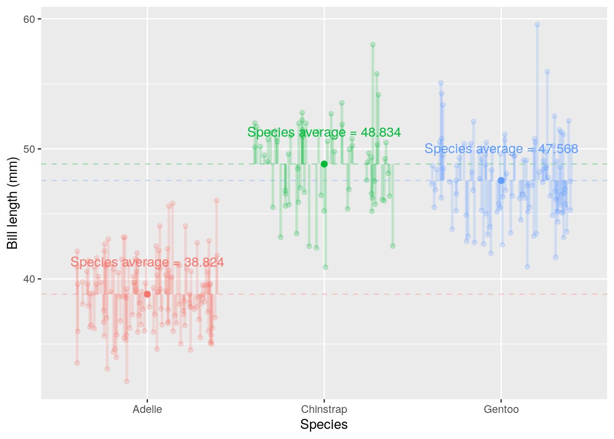
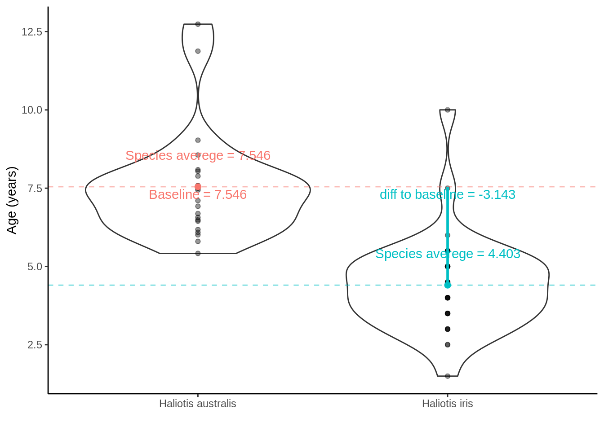

2 Data exploration and visualization
2.1 Learning objectives
- Define data sovereignty and explain this in relation to a researcher's obligation when collecting, displaying, and analysing data
- Create and communicate informative data visualisations using
R - Discuss and critique data visualisations
- Carry out and interpret the outputs of basic exploratory data analysis using in-built R functions
2.2 Data wrangling and manipulation
2.2.1 Introuducing the Palmer penguins
 Artwork by @allison_horst
Artwork by @allison_horst
library(palmerpenguins) ## contains some nice penguin data
penguins## # A tibble: 344 x 8
## species island bill_length_mm bill_depth_mm flipper_length_… body_mass_g
## <fct> <fct> <dbl> <dbl> <int> <int>
## 1 Adelie Torge… 39.1 18.7 181 3750
## 2 Adelie Torge… 39.5 17.4 186 3800
## 3 Adelie Torge… 40.3 18 195 3250
## 4 Adelie Torge… NA NA NA NA
## 5 Adelie Torge… 36.7 19.3 193 3450
## 6 Adelie Torge… 39.3 20.6 190 3650
## 7 Adelie Torge… 38.9 17.8 181 3625
## 8 Adelie Torge… 39.2 19.6 195 4675
## 9 Adelie Torge… 34.1 18.1 193 3475
## 10 Adelie Torge… 42 20.2 190 4250
## # … with 334 more rows, and 2 more variables: sex <fct>, year <int>2.2.2 Common dataframe manipulations in the tidyverse, using dplyr and tidyr
2.2.2.1 tidy data
 Illustration from the Openscapes blog Tidy Data for reproducibility, efficiency, and collaboration by Julia Lowndes and Allison Horst
Illustration from the Openscapes blog Tidy Data for reproducibility, efficiency, and collaboration by Julia Lowndes and Allison Horst
- Removing NA values
library(tidyverse)
penguins_nafree <- penguins %>% drop_na()
penguins_nafree## # A tibble: 333 x 8
## species island bill_length_mm bill_depth_mm flipper_length_… body_mass_g
## <fct> <fct> <dbl> <dbl> <int> <int>
## 1 Adelie Torge… 39.1 18.7 181 3750
## 2 Adelie Torge… 39.5 17.4 186 3800
## 3 Adelie Torge… 40.3 18 195 3250
## 4 Adelie Torge… 36.7 19.3 193 3450
## 5 Adelie Torge… 39.3 20.6 190 3650
## 6 Adelie Torge… 38.9 17.8 181 3625
## 7 Adelie Torge… 39.2 19.6 195 4675
## 8 Adelie Torge… 41.1 17.6 182 3200
## 9 Adelie Torge… 38.6 21.2 191 3800
## 10 Adelie Torge… 34.6 21.1 198 4400
## # … with 323 more rows, and 2 more variables: sex <fct>, year <int>- Extract rows that meet logical criteria
dplyr::filter(penguins_nafree, island == "Torgersen" )## # A tibble: 47 x 8
## species island bill_length_mm bill_depth_mm flipper_length_… body_mass_g
## <fct> <fct> <dbl> <dbl> <int> <int>
## 1 Adelie Torge… 39.1 18.7 181 3750
## 2 Adelie Torge… 39.5 17.4 186 3800
## 3 Adelie Torge… 40.3 18 195 3250
## 4 Adelie Torge… 36.7 19.3 193 3450
## 5 Adelie Torge… 39.3 20.6 190 3650
## 6 Adelie Torge… 38.9 17.8 181 3625
## 7 Adelie Torge… 39.2 19.6 195 4675
## 8 Adelie Torge… 41.1 17.6 182 3200
## 9 Adelie Torge… 38.6 21.2 191 3800
## 10 Adelie Torge… 34.6 21.1 198 4400
## # … with 37 more rows, and 2 more variables: sex <fct>, year <int>- Summarise data into single row of values
dplyr::summarise(penguins_nafree, avgerage_bill_length = mean(bill_length_mm))## # A tibble: 1 x 1
## avgerage_bill_length
## <dbl>
## 1 44.0- Group data into rows with the same value of Species
dplyr::group_by(penguins_nafree, species)## # A tibble: 333 x 8
## # Groups: species [3]
## species island bill_length_mm bill_depth_mm flipper_length_… body_mass_g
## <fct> <fct> <dbl> <dbl> <int> <int>
## 1 Adelie Torge… 39.1 18.7 181 3750
## 2 Adelie Torge… 39.5 17.4 186 3800
## 3 Adelie Torge… 40.3 18 195 3250
## 4 Adelie Torge… 36.7 19.3 193 3450
## 5 Adelie Torge… 39.3 20.6 190 3650
## 6 Adelie Torge… 38.9 17.8 181 3625
## 7 Adelie Torge… 39.2 19.6 195 4675
## 8 Adelie Torge… 41.1 17.6 182 3200
## 9 Adelie Torge… 38.6 21.2 191 3800
## 10 Adelie Torge… 34.6 21.1 198 4400
## # … with 323 more rows, and 2 more variables: sex <fct>, year <int>- Compute separate summary row for each group
penguins_nafree %>%
group_by(species) %>%
summarise(avgerage_bill_length = mean(bill_length_mm))## # A tibble: 3 x 2
## species avgerage_bill_length
## * <fct> <dbl>
## 1 Adelie 38.8
## 2 Chinstrap 48.8
## 3 Gentoo 47.6- Compute separate summary row for each group
penguins_nafree %>%
group_by(island,species) %>%
summarise(avgerage_bill_length = mean(bill_length_mm))## `summarise()` has grouped output by 'island'. You can override using the `.groups` argument.## # A tibble: 5 x 3
## # Groups: island [3]
## island species avgerage_bill_length
## <fct> <fct> <dbl>
## 1 Biscoe Adelie 39.0
## 2 Biscoe Gentoo 47.6
## 3 Dream Adelie 38.5
## 4 Dream Chinstrap 48.8
## 5 Torgersen Adelie 39.02.3 Data sovereignty
2.4 Data Viz
"...have obligations in that we have a great deal of power over how people ultimately make use of data, both in the patterns they see and the conclusions they draw."
"Clutter and confusion are not attributes of data - they are shortcomings of design."
2.4.1 Two types of plots
2.4.1.1 For you
2.4.1.2 For others
2.4.2 ggplot2
ggplot2 is an R package for producing statistical, or data, graphics; it has an underlying grammar based on the Grammar of Graphics
Every ggplot2 plot has three key components:
data,A set of
aesthetic mappings between variables in the data and visual properties, andAt least one layer which describes how to render each observation. Layers are usually created with a
geomfunction.

2.4.2.1 Plotting penguins
You might find this application useful
Scatter plot
ggplot(penguins_nafree,aes(x = body_mass_g, y = flipper_length_mm)) + ## data & aesthetics
geom_point() ## geomHow about improving our plots?
Simple scatter plot with a trend line
ggplot(penguins_nafree, aes(x = body_mass_g, y = flipper_length_mm)) +
geom_point() +
geom_smooth(method = "lm", col = "blue", se = FALSE)## `geom_smooth()` using formula 'y ~ x'Using facets to split by sex
ggplot(penguins_nafree, aes(x = body_mass_g, y = flipper_length_mm,
col = species)) +
geom_point(size = 2, alpha = 0.5) +
geom_smooth(method = "lm", se = FALSE) +
facet_grid(~ sex) +
theme_bw() +
labs(title = "Flipper Length and Body Mass, by Sex & Species",
subtitle = paste0(nrow(penguins), " of the Palmer Penguins"),
x = "Body Mass (g)",
y = "Flipper Length (mm)")## `geom_smooth()` using formula 'y ~ x'Boxplot
ggplot(penguins_nafree,aes(x = species, y = flipper_length_mm)) + ## data & aesthetics
geom_boxplot() ## geomBut do we get all we want to from this? What about variation within the species?
ggplot(penguins_nafree,aes(x = species, y = flipper_length_mm)) + ## data & aesthetics
geom_boxplot() ## geom
What about distribution?
ggplot(penguins_nafree,aes(x = species, y = flipper_length_mm)) + ## data & aesthetics
geom_violin() ## geom
2.4.2.2 What do we think about when we look at plots
Between group variation
 Within group variation
Within group variation